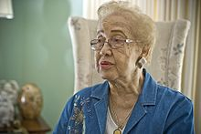

Biography
Katherine Johnson is an African-American mathematician who made contributions to the United States' aeronautics and space programs with the early application of digital electronic computers at NASA. She is Known for accuracy in computerized celestial navigation which is is the ancient and modern practice of position fixing that enables a navigator to transition through a space without having to rely on estimated calculations, or dead reckoning, to know their position. Her calculations were critical to the success of these missions. Johnson also performed calculations for the plans for a mission to Mars. She has been a big impact on the NASA organization.
Johnson decided on a career as a research mathematician, although this was a difficult field for African Americans and women to enter. The first jobs she found were in teaching. From 1953 to 1958, Johnson worked as a "computer", analyzing topics such as gust alleviation for aircraft. Back then there was segregation so the colored people would have to eat and use diffrent restrooms than their white peers. Johnson stated that she "didn't feel the segregation at NASA, because everybody there was doing research.